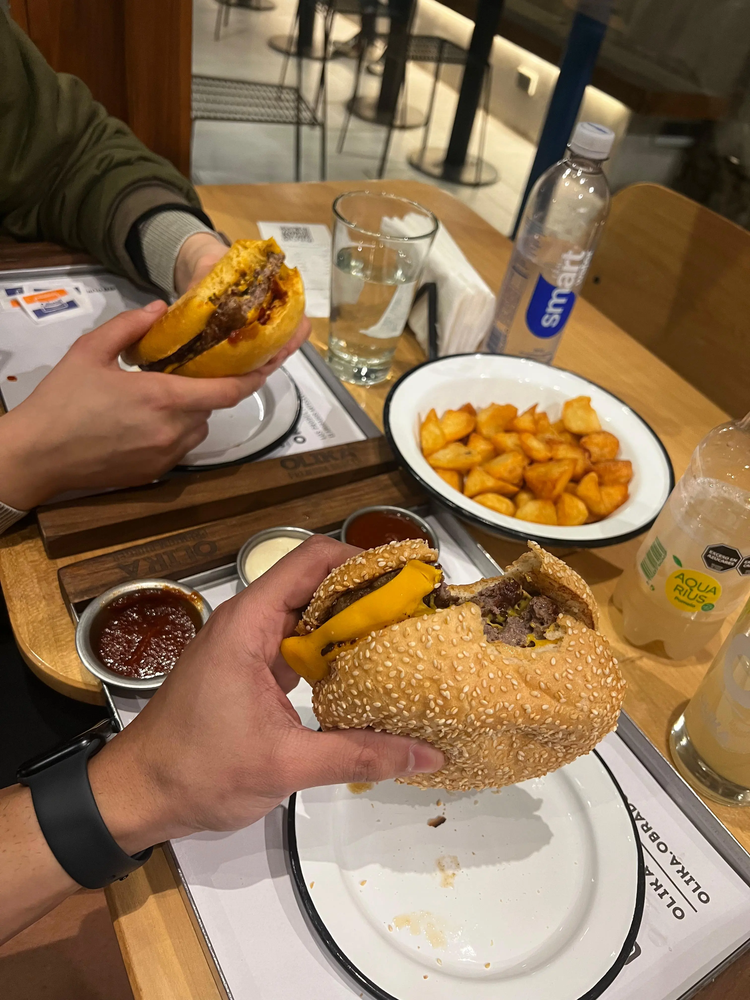

Una de las primeras y más lindas nochecitas juntos. Todo estuvo rico (guiño guiño)
Mi cita, la más hermosa. Me hubiese encantado subir una historia y poner eso, je. Te quedaba hermosa esa remera blanquita, parecías pintada por un artista.
Nuestra primera fotito en el gym, haciéndonos los grosos y con un poquito de verguenza de demostrar cariño :P.
Tu momento favorito, y según vos, tu muerte favorita JAJA.
Acá yo todo orgulloso de la técnica y la fuerza de mi futura mujer.
La chica que me gusta jugando en mi compu por primera vez, y encima tremenda pro. Momento hermoso para mí.
Acá otra que nos pintó hacernos los sexis en el telo jeje.
Dame mil noches de sábado como esa. Qué salir ni salir. Jugar juntos y poder darte un beso entre partida y partida. Qué más se puede pedir?
Mostrando un poquito los brazos de mi mujer.
Laburando e intentando aprender a jugar al Apex solo porque te gusta a vos (juego pedorro ese =P).
Que bien nos queda el negro, no? Tiamo.

La primer historia de insta que compartimos juntos jiji.
No podía faltar una fotito del "dúo fav" =P.
Primera vez que comimos en un hotel, noche de lujo fue esa, en Torres del Lago.
Si no me equivoco fue nuestra primer cenita casera juntos. Altos taquitos "nos salieron" (hiciste todo vos).
Última foto, pero no menos importante: la primera foto juntos, en teoría. Aunque sólo hayan salido nuestros antebrazos. Blanquita leche de mierda hermosa.
Gracias por mirarlo, espero te haya gustado.
Vamos a llenarlo de nuevas fotos que representen momentos lindos para nosotros.
Te amo hermosa ❤️